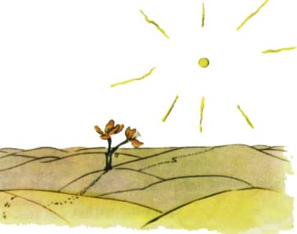

"Dobrý den," øekl malý princ.
"Dobrý den," øekla kvìtina.
"Kde jsou lidé?" zeptal se zdvoøile malý princ.
Kvìtina vidìla jednoho dne pøijít nìjakou karavanu:
"Lidé? Je jich myslím ¹est nebo sedm. Je tomu ji¾ mnoho let, co jsem je spatøila. Kdo ví, kde asi jsou. Vítr jimi povívá. Nemají koøeny a to jim velice vadí."
"Sbohem," øekl malý princ.
"Sbohem," odpovìdìla kvìtina.